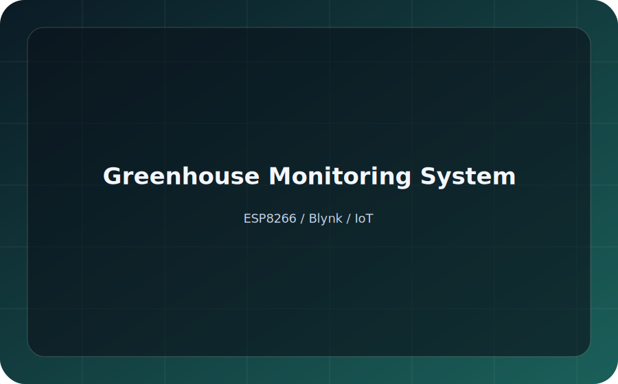

Greenhouse Monitoring System
Real-time sensing and control via Blynk; ESP8266 with soil moisture, MQ-135, DHT11, LDR.
Tech: ESP8266, Blynk, IoT
RepoAutomation & Electronics Enthusiast
Instrumentation & Automation Technology Undergraduate
Undergraduate in Instrumentation and Automation Technology, building embedded systems, IoT pipelines, and practical automation rigs for real-world sensing and control.
 Greenhouse Monitor
Greenhouse Monitor
I am pursuing a degree in Instrumentation and Automation Technology, building a solid foundation in industrial control, electronics, and real-time data acquisition. I am actively developing my skill set in embedded software and hardware design to bridge the gap between digital logic and physical application.
My goal is to leverage technology to solve meaningful problems. I am dedicated to continuous learning in the rapidly evolving fields of IoT and automation, aiming to contribute to efficient and innovative engineering projects.
Practical experience across embedded systems, IoT pipelines, and product-ready PCB design.
Arduino, ESP32, STM32
Wireless protocols, cloud integration, MQTT
KiCad, Altium Designer
SOLIDWORKS
Hands-on builds across embedded control, IoT monitoring, and PCB development.
Real-time sensing and control via Blynk; ESP8266 with soil moisture, MQ-135, DHT11, LDR.
Tech: ESP8266, Blynk, IoT
Repo
AVR-based design with interrupts and a 4-digit 7-segment UI.
Tech: ATmega328P, AVR C, 7-segment
RepoWearable IMU processing and OLED status display.
Tech: ESP32 (ESP-IDF), MPU6050, OLED
RepoNE555 astable PWM drive; custom KiCad layout.
Tech: NE555, PWM, KiCad
RepoStep-down transformer, bridge rectifier, LC filter, linear regulation.
Tech: Power electronics, KiCad
RepoThree-sensor DAQ with LabVIEW visualization (MPU6050, DS18B20, mic).
Tech: ATmega328P, LabVIEW
RepoAutonomous object detection and pushing; ESP32 + TB6612FNG; 1st runners-up at UoC FOT 2024.
Tech: ESP-IDF, motor control, TB6612FNG
RepoWeb-configurable alarms and timers, SNTP sync; custom 2-layer PCB (LM2596S + AMS1117, MAX7219 4-digit).
Tech: ESP32-WROOM-32, ESP-IDF, KiCad
Repo
5 opto-isolated inputs, 4 SSR outputs, onboard buck, galvanic isolation.
Tech: ESP32-WROOM-32, KiCad, IIoT
Repo